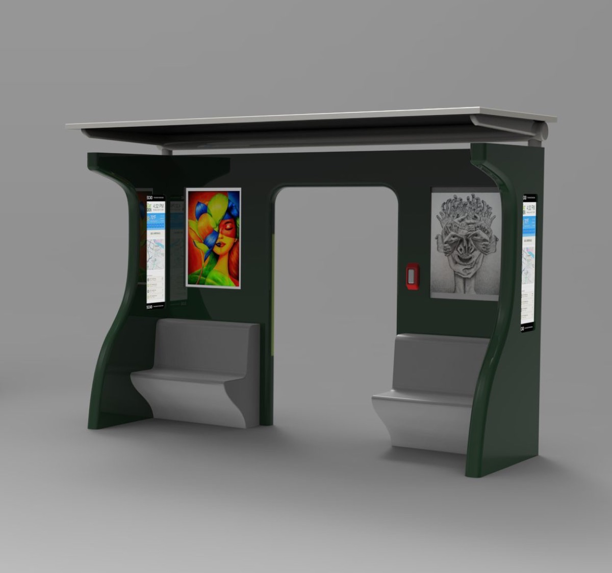
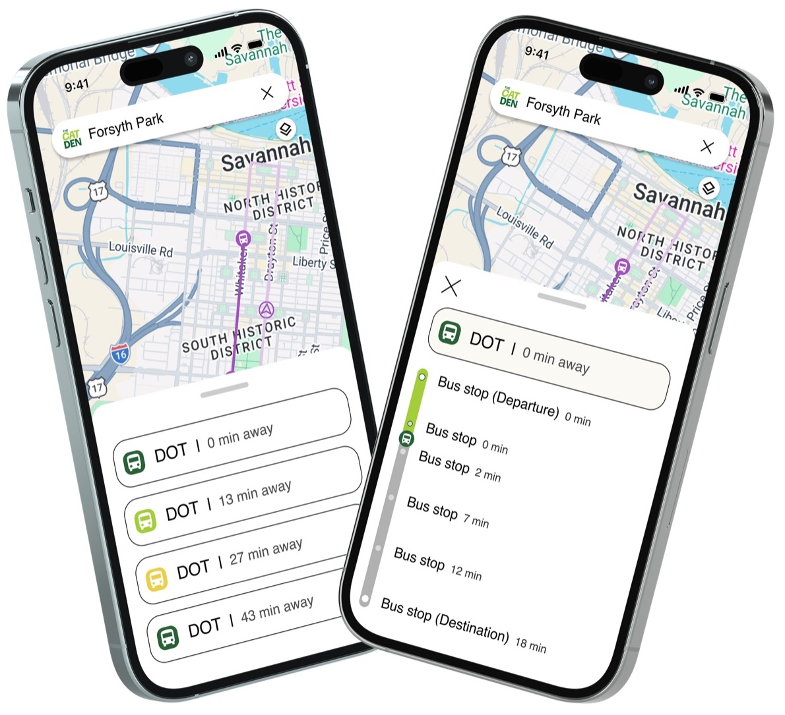
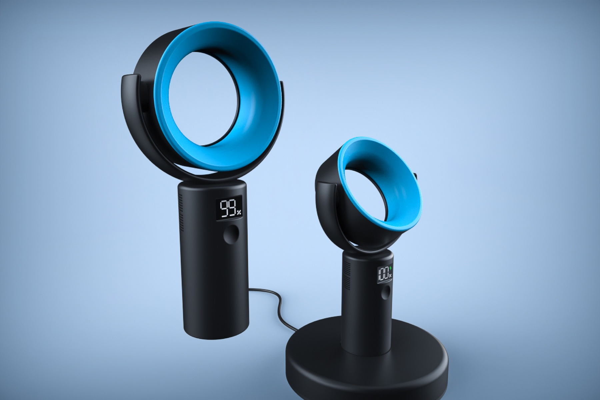

I notice things. Then I design them.
- Major
- UX Design
- Minor
- Industrial Design
- School
- SCAD
- Open to
- Internships
Work
- WallyMobile app
- SeekWorkplace platform
- TesseraMobile app
- The CAT DenBus stop + app
- Industrial DesignProduct renders

Wally
A financial literacy app for college students who find money management stressful. My first UX project.
What I noticed84% of students said they understood saving. Only 17% said the same about investing.
- Role
- UI lead
- Context
- UXDG 101
- Year
- 2026
- Award
- EPDA winner

Seek
A workplace platform that helps coworkers find the small things already happening around the office.
What I noticedThe moments that bring coworkers together are small and unplanned, and only the people sitting nearby ever find out.
- Role
- Research and brand
- Context
- SCAD StartUp
- Year
- 2026

Tessera
An app that notices when you are waiting around and suggests one small useful thing to do.
What I noticedEveryone we surveyed scrolls during short breaks. Many said they feel guilty afterward.
- Role
- UX designer
- Context
- Cornell Design-A-Thon
- Year
- 2026


The CAT Den
A redesigned bus stop for Savannah and the tracking app that goes with it.
What I noticedRiders show up 30 to 60 minutes early because they don't trust the schedule.
- Role
- App design
- Context
- FOUN 113
- Year
- 2026

Industrial Design
Three products I modeled and rendered for my industrial design minor: a fan, a faucet, and packaging.
What I noticedChrome only looks like chrome when strong darks sit next to bright highlights.
- Tools
- Rhino, KeyShot
- Pieces
- 3
- Year
- 2026